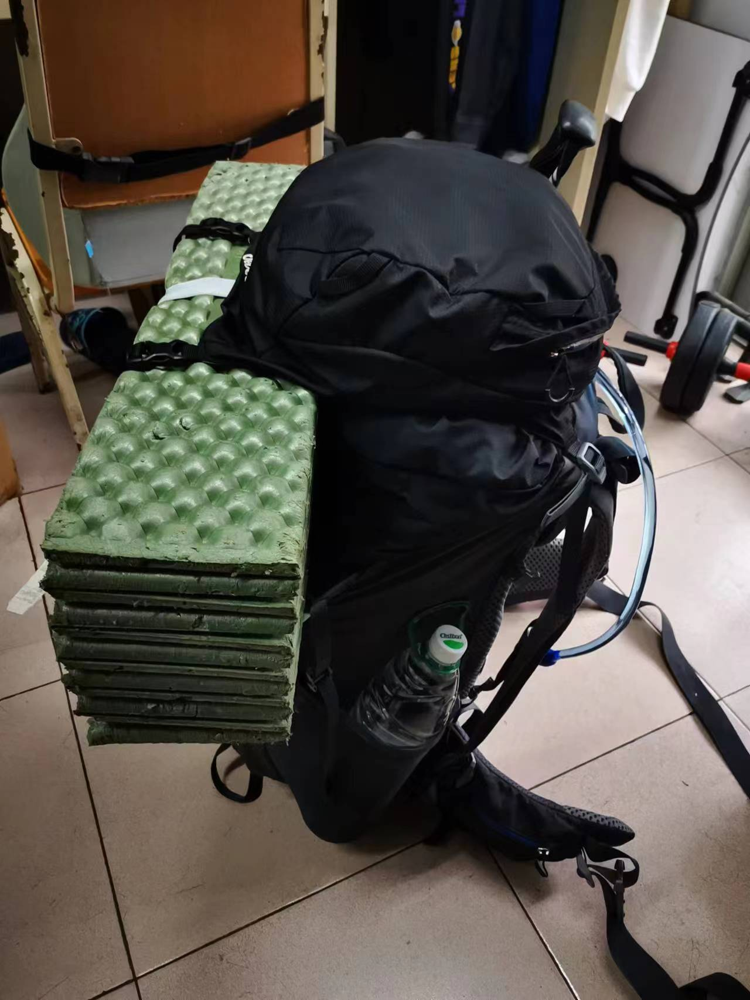
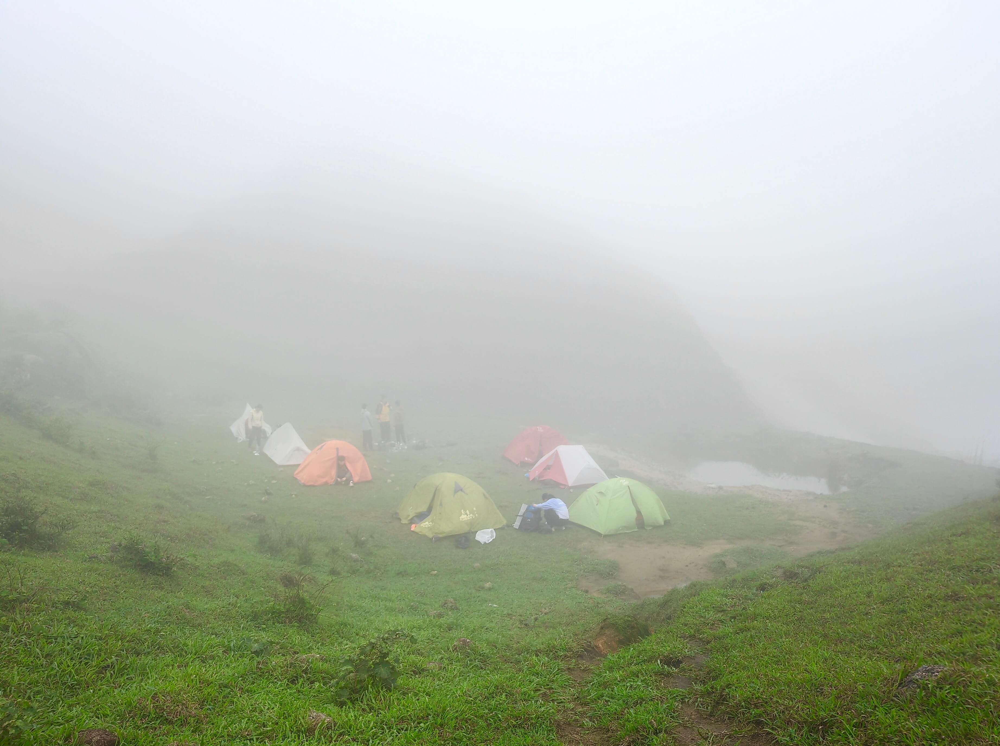

2023年4月天水线（云浮）
前念不生，即心
后念不灭，即佛
不知道是什么原因，这学期来训练的人很少，大家训练都没什么热情，可能是因为这学期还没出过线吧？终于盼来了天水，天水来的时候我也恰好做了一个我觉得是很重要的决定，为了完成那个那个决定带来的目标，我需要腾出很多时间去准备，所以本来是新学期起始线的天水突然就变成了大三的最后一条线。有点突然，但是想想其实也是缘分。
天水是我加入野草1后出的第一条线，直到现在我都还能回忆起当时第一次出线的不安2和憧憬。没想到现在的最后一条线居然也是天水，也算是有始有终吧？
1. 一个社团 ↩
2. 毕竟对刚进入大学的我来说，爬山好像离我很遥远，我只在电视里看到过这种“人类活动”。 ↩
预备！
六号晚上淋着雨去榕园饭堂分装备，看到好些陌生的人，社恐犯了ort……
红娘又给我绑了一条红绳，这次是绑在左手，不得不说红娘的技术相比一年前还是有进步的。
我把医疗包分给了两个新人，然后带着“活化石”的装备就回宿舍了，期待着第二天的出线~
七号下午两点半左右开始装包（应该是吧？我也记不清了），四点半就把包装好了，并且可以立起来，说明我装的包是合格的，哼哼哼~

谁知道刚立起来就发现水袋漏水了，水袋的夹子塞在包里被划开了，水直接从包的下面渗出来了，我直呼：寄！
赶忙检查登山包，包里的睡袋湿了，其他装备由于被我套了一层塑料袋躲过一劫。但是睡袋湿了问题还挺大的，总不能在山上睡湿睡袋吧？要不还是不去了？
去！怎么能不去，拿起吹风筒就是一阵狂吹吹了一小时终于吹干了，真是有惊无险，还好我提前一点时间开始装包（擦汗）
集合出发！依旧有一群老废物来送行，突然一阵恍惚，想不到“傻缺“也成了送行的一员(以往都是在车上笑着喊老废物上车的)。
车上大家都不太熟，也少了某歌后为大家献唱，于是平静地到达第二天的起点。一下车就发现有人的水袋漏水了（捂脸），在第一晚的露营地帮黑虎和三十搭帐篷，其实新帐篷我也不是很会搭，摸着摸着就搭好了，回去和”羊屎“睡觉去（哼着愉快的小曲）。
我的邻居3——”活化石“，听到我和羊屎说肚子饿，非常慷慨地请我们吃面包，いいね。
3. 只是第一晚的 ↩
第一天！
早上好大家（除了“羊屎”），哎呀，好久没这么早睡了，但是起得好早，困困困，敬爱可亲的毛会长已经在给大家煮开水了，赶紧吃早餐去。
出发啦~给大家拍个合照，走咯。新任队长香菜一马当先，一个人酷酷地走在前头，年轻真好，不，我年轻的时候也没这么好。
“旺财”走在附近，尝试丢掉脑子和“旺财”对话，现在只记得她老家的特产有一道菜是什么鸡，要丢在盐堆里(这不是咸死了吗？)
走着走着就开始下雨了，别慌！我有冲锋衣！再给登山包套上防雨罩，哼哼(＠￣ー￣＠)，只要不下大雨
(○´･д･)ﾉ怎么突然就下大雨了？冷死了，冲锋衣都顶不住，衣服湿了又被风吹干，日子没法过了，只能狂炫巧克力豆才能过日子(ノへ￣、)
还好后面雨小了，果然还是我更胜一筹(￣_,￣ )，好大的风，头发在风中凌乱
春天的天水，不知道是不是日子没挑好，没有太阳，阴天，一直下小雨，草甸感觉没那么好看了
哇，好大的图片，后面不放图片了，没弄线上图床○|￣|_
跟着“香菜”队长哼哧哼哧就干到风车了，简直轻而易举（才不是），印象中第一次来的时候，上风车那段路是手脚并用的4，这次是“人模人样”走上去的。
4. 因为实在是太怕死了，第一次走那么陡的路，吓死我了 ↩
然后就到了公路，没有太阳，当然也没有月亮看，天上都是白蒙蒙的一片，绕着盘山公路走过一座又一座风车，四点半就到了营地。
夸夸骨传导耳机，一边走公路一边听音乐很舒服，很有感觉！
到营地后和香菜回去找人，接着就是搭帐篷，然后，然后？然后就是吃饭啦。居然在太阳下山前吃完了饭，这还是第一次，“香菜”队长破纪录了，我记得黄牛石是在日落的时候煮的饭？
关于辣锅和番茄锅，算了，能吃就行。饭后当然是惯例的起名大会。
给大伙起点好名字，高贵的：“鲍鱼”，嗯，提高协会平均价格。
凶猛的：“黑虎”，很有攻击性的：“毒菇”，很有钱的：“旺财”，很有格调的：“三十”，可爱的：“肖恩”。还有啥，不记得了(现在已经两点了，困死我啦)。
听大伙唱歌，很好听，下次还想听，希望群友赏脸去个KTV。
然后回帐篷睡觉，因为外面太冷了，睡前上了个厕所，没有去前年那个，我记得前年那个地方，我上完后看到那里写着“高压危险”(谢天谢地)
有点点早，睡不着，在帐篷里看天龙八部，不得不说金庸老爷子真能写。
第二天

肯定是没日出的，这个天气，但是还是六点多起了，喝下冻了一晚的冰阔落，然后再去吃早餐(可乐开胃)。
下山的路很滑，很滑很滑，我几次差点摔了，但就是没摔成，香菜倒是一屁股摔下去，被我要求再摔一次，我给他拍个照。（据说毒菇在后面也摔了）
毛会长好卷，走得贼快。
到山脚了，找到传说中的小溪，前年来的时候只顾着和黄妈哼哧哼哧地往前冲，没泡成脚，那时还年轻，不懂享受（不是），这次终于回天水泡到脚了，不得不说很舒服。
一点半就到曹田村了，司机迟到一个半小时，可恶！
车上肚子饿了都不敢吃东西，怕晚上吃不下，桀桀桀，我真聪明。
可是红娘他们好像午饭就没吃，可恶，还是太善良了┌(。Д。)┐
时间过得好快，当时刚进大学的我，十一点半睡觉就觉得很晚了，现在都两点了，啧啧啧。
咦？所以这跟开头那句佛语有什么关系？我为什么要写那句话来着？
不记得啦，好困啊，这次就记录到这里吧~